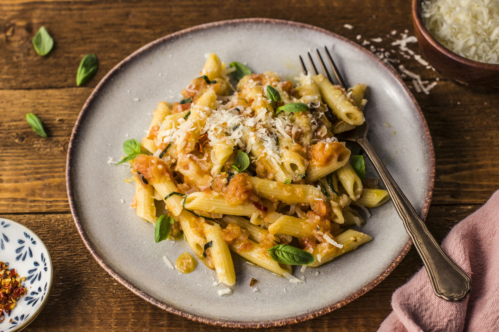

- Penne pasta - 12 ounces (about 340 grams)
- Olive oil - 1/4 cup
- Garlic - 4 cloves, minced
- Red chili flakes - 1 teaspoon (adjust to taste)
- Crushed tomatoes - 1 can (14.5 ounces or 400 grams)
- Salt - to taste
- Fresh basil - 1/4 cup, chopped
- Parmesan cheese - grated, for serving (optional)
|
- Bring a large pot of salted water to a boil. Add the penne pasta and cook according to package instructions until al dente. Drain and set aside.
- In a large skillet, heat the olive oil over medium heat. Add the minced garlic and cook until fragrant and golden, about 1-2 minutes. Be careful not to burn the garlic.
- Add the red chili flakes to the skillet and cook for an additional 30 seconds.
- Stir in the crushed tomatoes and bring to a simmer. Cook for about 10 minutes, allowing the sauce to thicken and the flavors to meld. Season with salt to taste.
- Add the cooked penne pasta to the sauce and toss to coat evenly. Cook for another 2-3 minutes until the pasta is heated through.
- Remove from heat and stir in the chopped basil.
- Serve the Penne all'Arrabbiata hot, topped with grated Parmesan cheese if desired.
|

|